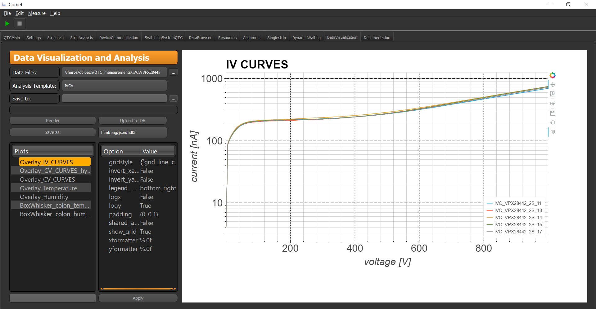

Data Visualization and Analysis¶
The Data Visualization and Analysis tab is an easy way to plot/analyse all kind of data. It can cope with ASCII, JSON and HDF5 files. The core GUI element looks like
The option Data Files lets you select the data files to be plotted together. Therefore you need a Analysis Template which has all information stored for analysing and plotting the selected data. The save to option lets you define a directory to store your data/plots.
To actually see something one has to hit the Render button, which initiates the plotting/analysis. And with the save as button and the corresponding combo box you can choose to save the data, as well as who the data is stored.
Important
The analysis script is actually a stand alone software which can also be found on my github page. So if you are interested in developing your own plotting plugin, please see the corresponding docs of the plotting scripts.
After rendering you can choose which generated plot you want to display in the options Plots. If you are not content with the plotting results, lets say the y-limits are not correct the plotting option for each particular plot will be displayed. You can either select one and manipulate it there or, you can add new ones as well in the line edit below. By pressing the Apply button the software reconfigs the plot and displays it to you.
Caution
If you pass a critical parameter which is somehow malformed in its value. You can damage the current plot object to a degree it is no longer plottable. In this case you have to re-render all plots. By doing so you loose all previous changes to the plots!
For the basic structure and usage of the plotting lib please see the ReadMe for the plotting lib at Plotting Scripts doc
GUI specific functions¶
The following sections describe functions of the Data Visualization GUI which are only accessible through the GUI version.
Saving Data as XML¶
The Data Visualisation GUI features a XML parsing tool, which can save your data as an XML file. For it work a XML template must be present in the root folder of your GUI configs. (Or simply spoken, it has to be at the same directory as your settings config)
Such a config is again a YAML file and can look like:
---
Settings_name: CMSxmlTemplate
Template:
HEADER:
TYPE:
EXTENSION_TABLE_NAME: <EXTENSION_TABLE_NAME>
NAME: <NAME>
RUN:
RUN_TYPE: <Project>
RUN_NUMBER: <RUN_NUMBER>
LOCATION: <LOCATION>
INITIATED_BY_USER: <Operator>
RUN_BEGIN_TIMESTAMP: <Date>
RUN_END_TIMESTAMP: <ENDTIME>
COMMENT_DESCRIPTION: <RUN_COMMENT>
DATA_SET:
COMMENT_DESCRIPTION: <DATA_COMMENT>
VERSION: <VERSION> # The data version? How many times I started the measurement?
PART:
KIND_OF_PART: <Sensor Type>
SERIAL_NUMBER: <ID>
DATA: //DATA_DUMP_template//
DATA_DUMP_template:
Istrip:
STRIP: <Pad>
CURRNT_NAMPR: <Istrip>
TEMP_DEGC: <Temperature>
RH_PRCNT: <Humidity>
BIASCURRNT_NAMPR: <Idark>
Cac:
STRIP: <Pad>
CAPCTNC_PFRD: <Cac>
TEMP_DEGC: <Temperature>
RH_PRCNT: <Humidity>
BIASCURRNT_NAMPR: <Idark>
in order for the framework to recognise your template you have to add the parameter:
xml_template: CMSxmlTemplate
to your main config file.
Note
The name can be changed to your liking here!
How does it work? - The first entry is the "Template" entry. This defines the general structure of your output XML. The Keys inside are the items in the XML file and the values enclosed by <...> are placeholder names. These placeholder are searched for in the header of your file with the regex: r"{}Ws?(.*)". The curly brackets is the placeholder name without <>. The value inside the () is then extracted as seen in the regex and inserted as value in the XML entry.
To clarify this imagine the measurement file:
# Measurement file:
# Project: HPK 6 inch 2018
# Sensor Type: 2S
# ID: VPX28442_04_2S
# Operator: Dominic
# Date: Tue Feb 26 11:16:57 2019
Pad Istrip Rpoly Idark Cac Cint Idiel Rint Temperature Humidity
padNumber[#] current[A] res[Ohm] current[A] cap[F] cap[F] current[A] res[Ohm] degree[C] rel. percent[rel%]
1.0 -- -- -- -- -- -- -- 21.2 20.3
2.0 -1.203639e-10 1938115.94709 -1.84013333333e-07 1.48189666667e-10 4.71583e-12 -3.35330366667e-11 -- 21.2 20.3
3.0 -9.079903e-11 1932907.86233 -1.83905333333e-07 1.48212333333e-10 4.73185e-12 -2.40601026667e-11 -- 21.2 20.3
4.0 -1.02729356667e-10 1936311.72302 -1.83022e-07 1.48234666667e-10 4.7338e-12 2.82378533333e-11 -- 21.2 20.2
5.0 -1.16085966667e-10 1936726.82213 -1.8326e-07 1.48238e-10 4.74095666667e-12 1.35758e-12 -- 21.2 20.2
The entry in the xml template: RUN_TYPE: <Project> is therefore searching for the word "Project" and is inserting the value "HPK 6 inch 2018" in this case. To every entry the script does not find a valid regex result to, a "None" will be inserted instead. Another feature is the possibility to insert data with a separate template. This is done with the: "DATA: //DATA_DUMP_template//" entry. The "//" here signals that it must search for a cloneable template. In the configuration file you will find an entry with exact the same name. Insider are again keys. The first keys signal what data should be looked at. For instance the first entry is the "Istrip" entry. Therefore, a XML file will be generated for this measurement.
The first thing the script does is a loop over all values of in this case "Istrip" form the data. With each data entry, the following template will be executed to generate the data entry. Here the keys are again the entry name in the XML file and the value enclosed in the <...> is now a column descriptor. If the script encounters such a value the corresponding value from this column will be used and inserted. To show this a part of a final XML file can be seen here:
<?xml version="1.0" ?>
<root>
<HEADER>
<TYPE>
<EXTENSION_TABLE_NAME>None</EXTENSION_TABLE_NAME>
<NAME>None</NAME>
</TYPE>
<RUN>
<RUN_TYPE>HPK 6 inch 2018</RUN_TYPE>
<RUN_NUMBER>None</RUN_NUMBER>
<LOCATION>None</LOCATION>
<INITIATED_BY_USER>Dominic</INITIATED_BY_USER>
<RUN_BEGIN_TIMESTAMP>Tue Feb 26 11:16:57 2019</RUN_BEGIN_TIMESTAMP>
<RUN_END_TIMESTAMP>None</RUN_END_TIMESTAMP>
<COMMENT_DESCRIPTION>None</COMMENT_DESCRIPTION>
</RUN>
</HEADER>
<DATA_SET>
<COMMENT_DESCRIPTION>None</COMMENT_DESCRIPTION>
<VERSION>None</VERSION>
<PART>
<KIND_OF_PART>2S</KIND_OF_PART>
<SERIAL_NUMBER>VPX28442_04_2S</SERIAL_NUMBER>
</PART>
<DATA>
<STRIP>1.0</STRIP>
<CURRNT_NAMPR>nan</CURRNT_NAMPR>
<TEMP_DEGC>21.2</TEMP_DEGC>
<RH_PRCNT>20.3</RH_PRCNT>
<BIASCURRNT_NAMPR>nan</BIASCURRNT_NAMPR>
</DATA>
<DATA>
<STRIP>2.0</STRIP>
<CURRNT_NAMPR>-1.203639e-10</CURRNT_NAMPR>
<TEMP_DEGC>21.2</TEMP_DEGC>
<RH_PRCNT>20.3</RH_PRCNT>
<BIASCURRNT_NAMPR>-1.84013333333e-07</BIASCURRNT_NAMPR>
</DATA>
<DATA>
<STRIP>3.0</STRIP>
<CURRNT_NAMPR>-9.079903e-11</CURRNT_NAMPR>
<TEMP_DEGC>21.2</TEMP_DEGC>
<RH_PRCNT>20.3</RH_PRCNT>
<BIASCURRNT_NAMPR>-1.83905333333e-07</BIASCURRNT_NAMPR>
</DATA>
The same procedure will be done for the "Cac" entry in a separate file.